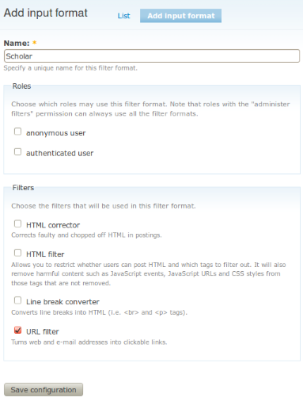

Instalacja modułu Scholar jest analogiczna jak innych modułów dla Drupala.
Pliki modułu należy umieścić w katalogu sites/all/modules/scholar, przejść do odszukać w sekcji ventures moduł Scholar, zaznaczyć go a następnie zapisać konfigurację.
Aby uzyskać najlepsze efekty prezentacyjne moduł oraz środowisko jego działania muszą zostać poprawnie skonfigurowane.
Do stron generowanych przez moduł Scholar (nazywanych dalej „węzłami typu Scholar”), podobnie jak do węzłów typów innych niż Strona (ang. Page) Drupal dodaje automatycznie informacje o czasie utworzenia oraz o autorze jej treści. Wyświetlanie tych informacji jest nieporządane, głównie ze względu na fakt, że autorem strony jest zawsze Anonim. Jest tak dlatego, że zawartość strony jest budowana na podstawie danych, które mogły zostać wpisane przez więcej niż jednego użytkownika.
Aby wyłączyć pokazywanie wspomnianych informacji należy przejść do , w sekcji Display post information on, odznaczyć typ Scholar i zapisać zmiany.
Domyślnie wszystkie treści węzłów w Drupalu są filtrowane. Zestaw filtrów definiuje tzw. format danych (ang. Input format). Domyślnie dostępne są dwa formaty: Filtered HTML (1) oraz Full HTML (2).
Pierwszy nie nadaje się do użycia w węzłach typu Scholar
z powodu odfiltrowywania większości struktury dokumentu – filtr Filter HTML
usuwa większość elementów blokowych za wyjątkiem list UL, OL i DL).
Drugi format można użyc z pewnymi zastrzeżeniami. W skład jego filtrów wchodzą dwa, które mogą powodować, że wynikowy dokument nie będzie wyglądał tak jak powinien (np. będzie brakowało w nim przejść do nowego wiersza, lub przeciwnie, będzie ich za dużo). Są to:
BR tagami P oraz przeorganizowanymi tagami BR.Format danych dla węzłów typu Scholar powinien mieć zatem wyłączone filtry HTML Corrector, HTML Filter oraz Line break converter. Wyłączenie ich nie zagraża bezpieczeństwu strony, o ile format używany jest wyłącznie przez węzły typu Scholar.
Aby dodać nowy format danych dla węzłów typu Scholar należy przejść do (rys. 1.1): , a następnie:
Następnie w ustawieniach modułu Scholar w sekcji Nodes należy wybrać nowoutworzony format danych i zapisać zmiany (rys. 1.2).
|

Rys. 1.1 Konfiguracja formatu danych dla węzłów typu Scholar.
|
Rys. 1.2 Ustawienie formatu danych dla węzłów typu Scholar.
|
Moduł Taxonomy służy do kategoryzowania treści. Aby umożliwić kategoryzowanie węzłów tworzonych w ramach modułu Scholar, konieczne jest (poza zainstalowaniem tego modułu) podpięcie jednego lub więcej istniejącego słownika do węzłów typu Scholar.
W tym celu należy przejść do , następnie przejść do edycji wybranego z listy słownika. W sekcji Content types zaznaczyć typ Scholar. Od tego momentu bedzie można przyporządkowywać tagi z tego słownika do węzłów zarządzanych przez moduł Scholar.
Do ekranu konfiguracji modułu Scholar można dotrzeć za pomocą menu głównego idąc do , albo wchodząc w łącze Settings na stronie głównej modułu Scholar.
Za pomocą formularza można skonfigurować:
Istotą modułu Scholar jest automatycznie generowanie wykazów aktywności naukowej na podstawie danych zawartych w bazie danych.
Do generowania treści stron moduł Scholar używa tagów BBCode. Dostępne tagi to:
| Tagi standardowe | |